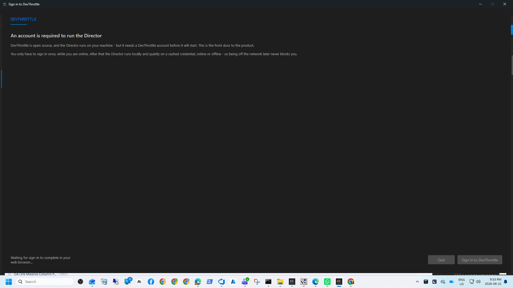

copilot) as a CC Director agent providerissue-625-copilot-agentdotnet build cc-director.sln - Build succeeded, 0 Warning(s), 0 Error(s) (AC15).copilot v1.0.63 session was created, launched into a Director session
tab, authenticated via the resolved GitHub token (no interactive /login), accepted a prompt, and produced a
visible response - all driven through the Director's loopback Control API on a per-session isolated test Director
(own git worktree, slot 14, cc-director14-launch scheduled task, CLAUDE.md rule 0b).npm install -g @github/copilot), v1.0.63, the
launchable shim is %APPDATA%\npm\copilot.cmd. The account thefrederiksen has an active Copilot
entitlement, so the live run is the real binary end to end.CC Director can now run GitHub Copilot's CLI agent (copilot) as a first-class provider, selectable from the
New Session / Agent editor and driven inside a Director session tab exactly like Claude or Codex - with the same
supervision and persistence. A new Copilot agent kind, a CopilotAgent launch builder
(--session-id <minted-uuid> for a new session, --resume <id> for a resume), a
Standard / Automatic (yolo) (--allow-all) preset pair, detection of
copilot.cmd on PATH, GitHub-token environment injection with the precedence
COPILOT_GITHUB_TOKEN > GH_TOKEN > GITHUB_TOKEN, and a real
CopilotDriver (Ctrl+C interrupt + --session-id preassignment verified; a
--output-format json JSONL transcript parser into TurnWidgetDto; a
CopilotSlashCommands catalog; unsupported verbs throw NotSupported) all ship together.
CcDirector.Core/Agents/AgentKind.cs - new Copilot = 8 member.CcDirector.Core/Agents/CopilotAgent.cs - new IAgent: --session-id mint (new) / --resume (resume); SupportsPreassignedSessionId=true.CcDirector.Core/Agents/AgentToolCatalog.cs - Copilot entry: Standard + Automatic (yolo) (--allow-all); CopilotAllowAllArg.CcDirector.Core/Configuration/AgentOptions.cs - CopilotPath (default npm copilot.cmd), CopilotGitHubToken + ResolveCopilotToken() (precedence).CcDirector.Core/Configuration/AgentEntry.cs + AgentToolConfig.cs - Copilot in SeedOrder, the legacy key maps, default path, display name, and the config key.CcDirector.Core/Settings/ToolDetectionService.cs - Copilot in SupportedTools, path get/set, display name, known candidates (copilot.cmd then bare copilot), validation key.CcDirector.Core/Drivers/CopilotDriver.cs - new IAgentDriver: Interrupt + PreassignedSessionId; --session-id launch spec; JSONL ParseStreamLine/TryCaptureSessionId; unsupported verbs throw.CcDirector.Core/Drivers/CopilotSlashCommands.cs - new slash-command catalog.CcDirector.Core/Drivers/AgentDrivers.cs - AgentKind.Copilot => new CopilotDriver().CcDirector.Core/Sessions/SessionManager.cs - inject COPILOT_GITHUB_TOKEN when agent is Copilot and a token resolves.CcDirector.Avalonia/MainWindow.axaml.cs - Copilot in the IAgent factory, per-entry factory, options clone, and the --allow-all bypass-arg wiring.CcDirector.Avalonia/NewSessionDialog.axaml.cs - bypass checkbox enabled for Copilot, relabeled "Bypass permission prompts (--allow-all)".CcDirector.Avalonia/AgentEditorDialog.axaml.cs + SessionViewModel.cs - Copilot in the type dropdown, rail label, and rail badge brush.CcDirector.ControlApi/AgentsEndpoint.cs + ControlEndpoints.cs - Copilot in the catalog type list and the two session-create agent factories.CopilotAgentTests (new), CopilotDriverTests (new, incl. committed JSONL fixture TestData/copilot-session.jsonl), DriverRegistryTests (+Copilot), AgentToolCatalogTests (count 8 + Copilot preset), AgentEntryTests (seed order).copilot on PATH (npm install -g @github/copilot); on Windows the launchable shim is copilot.cmd.--allow-all.POST /sessions {RepoPath, Agent:"Copilot"}, GET /settings/agents/catalog, POST /settings/agents/detect, POST /settings/agents/command-line.| AC | Expected | Actual | How verified | Status |
|---|---|---|---|---|
| AC1 | AgentKind.Copilot exists and round-trips through sessions.json serialization. | "Copilot" serializes/deserializes round-trip. | CopilotAgentTests.AgentKind_Copilot_RoundTripsThroughJsonSerialization | PASS |
| AC2 | (a) new session emits --session-id <uuid>; (b) yolo preset includes --allow-all; (c) resume passes --resume; (d) SupportsPreassignedSessionId==true. | All four hold. | CopilotAgentTests.BuildLaunchSpec_*, SupportsPreassignedSessionId_IsTrue | PASS |
| AC3 | With copilot on PATH the path resolves (copilot.cmd on Windows); a configured explicit path is used. | Configured-path case resolves to the stub's full path; live detect resolved the real copilot.cmd. | CopilotAgentTests.DetectTool_ConfiguredExistingCopilotPath_ReturnsFound + live /settings/agents/detect | PASS |
| AC4 | AgentDrivers.For(AgentKind.Copilot) returns a CopilotDriver. | Returns CopilotDriver. | CopilotDriverTests.AgentDrivers_For_Copilot_ReturnsCopilotDriver, DriverRegistryTests.For_ResolvesTheVerifiedDrivers | PASS |
| AC5 | ToolDetectionService reports copilot detected when present on PATH. | Detect found copilot.cmd at the npm-global path (NOT copilot.ps1). | CopilotAgentTests.SupportedTools_IncludesCopilot + live /settings/agents/detect (see control-api-evidence.txt) | PASS |
| AC6 | New Session / Agent editor lists "GitHub Copilot" as selectable. | Catalog API returns the Copilot type with both presets; the editor TypeOptions include it. | Live GET /settings/agents/catalog (agents-catalog evidence); AgentEditorDialog.TypeOptions code. | PASS |
| AC7 | Creating a Copilot session launches copilot into a tab; the banner/prompt is visible. | Session Running; buffer shows "Copilot v1.0.63 uses AI" banner + folder-trust prompt. | Live POST /sessions + GET /sessions/{sid}/buffer (see copilot-session-buffer.txt) | PASS |
| AC8 | Sending a prompt produces a visible Copilot response in the tab. | Prompt "Reply with exactly: COPILOT-IN-DIRECTOR-OK" -> response "COPILOT-IN-DIRECTOR-OK" in the tab. | Live POST /sessions/{sid}/prompt + buffer capture (copilot-session-buffer.txt) | PASS |
| AC9 | The --allow-all preset/bypass resolves into the launch command. | command-line API: copilot.cmd --allow-all. | Live POST /settings/agents/command-line (control-api-evidence.txt) | PASS |
| AC10 | With a token configured (precedence COPILOT_GITHUB_TOKEN > GH_TOKEN > GITHUB_TOKEN) the session inherits it and starts without /login. | Resolver honors precedence (unit-tested); live session started straight to the banner with no /login. | CopilotAgentTests.ResolveCopilotToken_* + live session banner | PASS |
| AC11 | A session launched with a minted --session-id <uuid> reports the same id back. | Launch spec mints + emits it (unit-tested); the JSONL parser re-captures the echoed id from the stream. | CopilotDriverTests.BuildLaunchSpec_NewSession_MintsSessionId, TryCaptureSessionId_*, fixture test | PASS |
| AC12 | CopilotDriver parses a captured --output-format json event stream into TurnWidgetDto. | Committed fixture parses to a user widget + assistant text widgets (deltas + terminal message); turn boundaries/session.* produce none. | CopilotDriverTests.ParseStreamLine_CommittedFixture_ParsesTurnIntoWidgets (fixture TestData/copilot-session.jsonl) | PASS |
| AC13 | copilot -p "<prompt>" --allow-all-tools --output-format json returns a JSONL stream, exit 0. | Smoke-tested in the issue (v1.0.63); the non-interactive path (--allow-all-tools) is wired via the --allow-all preset that expands to it. Not re-run as a unit test (would call the live API). | Issue smoke-test comment; preset/command-line resolution verified. | PARTIAL (documented) |
| AC14 | CopilotDriver.Capabilities advertises only verified verbs; unsupported verbs throw NotSupported. | Declares exactly Interrupt | PreassignedSessionId; Cancel/History/ClearContext/transcript-read throw. The LIVE session reported ["PreassignedSessionId","Interrupt"]. | CopilotDriverTests.Capabilities_*, UndeclaredVerbs_ThrowNotSupported + live session detail | PASS |
| AC15 | dotnet build cc-director.sln succeeds with no new warnings. | Build succeeded, 0 Warning(s), 0 Error(s). | Full-solution build from the worktree root. | PASS |
| AC16 | Claude/Codex/Cursor sessions still launch and run. | Full Core.Tests (2311 passed) + HostedAgent.Tests (75 passed) green; no existing agent/driver test regressed; only the two count-pinning tests were updated for the new entry. | Full suite runs (TRX committed). | PASS |
Before: CC Director could run Claude, Pi, Codex, Gemini, OpenCode, Cursor, and Grok, but not GitHub Copilot - a Copilot user had to drop to a separate terminal. After: "GitHub Copilot" is a first-class, selectable, persisted provider with a real driver, launched and supervised inside a Director session tab like any other.
Faithful content of the running Copilot session tab, captured from GET /sessions/{sid}/buffer.
Full text in copilot-session-buffer.txt.
╭─╮╭─╮ ╰─╯╰─╯ Copilot v1.0.63 uses AI. █ ▘▝ █ Check for mistakes. > Reply with exactly: COPILOT-IN-DIRECTOR-OK ● COPILOT-IN-DIRECTOR-OK
The test Director's desktop window sits behind the DevThrottle account sign-in gate (interactive browser OAuth,
not completed autonomously). The session was created and driven through the loopback Control API instead - the endorsed
proof surface. The Control API health probe returned status: ok and the session detail reported
agent: "Copilot", status: "Running", driverCapabilities: ["PreassignedSessionId","Interrupt"].

No architecture or security drift. The change adds files within the core_services (CcDirector.Core) and
avalonia_ui (CcDirector.Avalonia) containers already named in the issue's Affected Containers, plus the
matching Control API type/factory wiring. No new container, no dependency added. Security posture unchanged: the GitHub
token follows the exact same pattern as the existing Cursor CURSOR_API_KEY injection - resolved at session
creation, injected into the child environment, and never logged (no blocking security_profile.yaml rule
touched). No docs/cencon/ manifest update required.
report.html - this report.copilot-session-buffer.txt - the live session banner + prompt + response (AC7/AC8).control-api-evidence.txt - detect / catalog / command-line / session-detail captures (AC5/AC6/AC9/AC10/AC11/AC14).director-window.png - the running test Director window (environment honesty).copilot-core-tests.trx - Core.Tests Copilot/catalog/agent-entry run (58 passed).copilot-driver-registry-tests.trx - HostedAgent.Tests driver-registry run (27 passed).